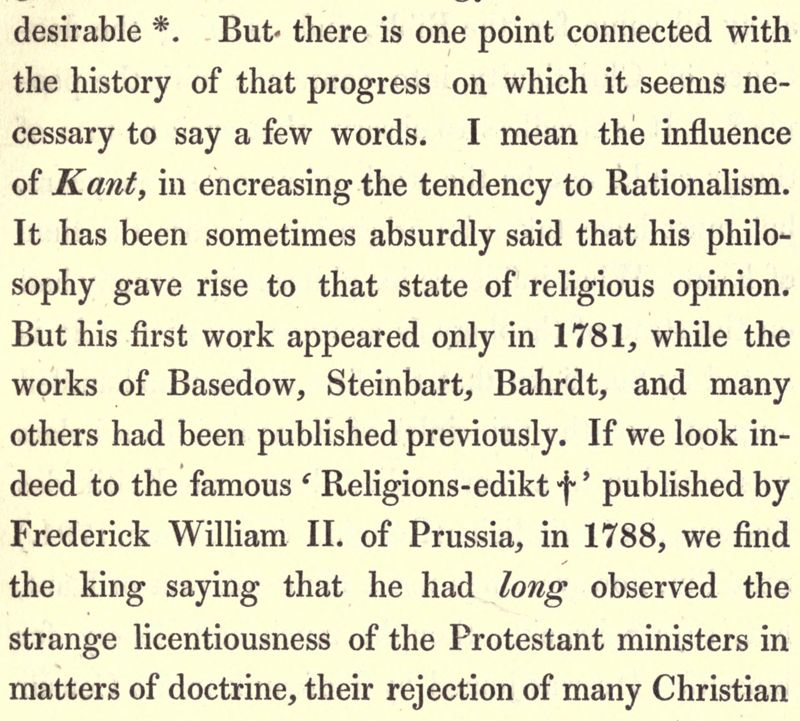

The influence of Kant (1829 edition, p. 183)
English: 1829, p. 183, scan n220. Highlighted: the subject Lecky refers to.

… But there is one point connected with the history of that progress on which it seems necessary to say a few words. I mean the influence of Kant, in encreasing the tendency to Rationalism. It has been sometimes absurdly said that his philosophy gave rise to that state of religious opinion. But his first work appeared only in 1781, while the works of Basedow, Steinbart, Bahrdt, and many others had been published previously. If we look indeed to the famous ‘Religions-edikt’ published by Frederick William II. of Prussia, in 1788, we find the king saying that he had long observed the strange licentiousness of the Protestant ministers in matters of doctrine, their rejection of many Christian [doctrines] …
Lecky (ch. II, text at note 21): “In Germany, Kant from the beginning pronounced this mode of reasoning to be unphilosophical; … On Kant’s influence on German Rationalism, see Rose On Protestantism in Germany, pp. 183–190.” The reference is exact; Rose’s qualification, that Kant strengthened a movement already under way, is worth having beside Lecky’s sentence. (“Encreasing” is Rose’s spelling.)
Further down the rabbit hole
Sources that Lecky cites in the notes next to the ones that cite this page.
- Mansel and Fitzgerald, Aids to FaithIf a man can throw a stone, God can work a miracle: the Victorian defence of miracles
- Montalembert, Le Père LacordaireThe heresiarch who took no one with him
- Macaulay, History of England and EssaysMacaulay on Puritans, bear-baiting and the servile Church
- “The Supernatural”, Edinburgh Review, October 1862Can a believer in universal natural law accept a miracle?
- Augustine, De civitate DeiSeventy reports, not miracles, and a town, not a province
- Brewster, Memoirs of the Life, Writings, and Discoveries of Sir Isaac NewtonLecky’s Newton quote and the missing last sentence


Backlinks
Every place in Rationalism in Europe that links to this page (generated automatically when the site is built).
- Chapter II: note 21